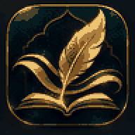

فصيح
المعنى
الصورة
البلاغة
الصياغة
الإيقاع الذي ستقلّده:

نفهم كيف صنع الشاعر البيت، نحفظ موسيقاه وصورته، ثم نحاكيه ببيت من عندنا. لا تظهر لك التفعيلات التفصيلية لمحاولتك قبل أن تكتشف الخلل وتحاول إصلاحه.
اكتب معنى جديدًا على إيقاع البيت. لا تحاول ملء التفعيلات كلمةً كلمة. اكتب البيت أولًا كما تسمعه في أذنك، ثم افحصه.
المراجعة بعد ١، ٣، ٧، ١٤، ثم ٣٠ يومًا. في كل مرة يقلّ المساعد.
اختر نموذجًا، اكتب المعنى والصورة أولًا، ثم البيت. التطبيق يسجل أخطاءك الإيقاعية المحتملة لتعرف نمط ضعفك.
المكتبة تبقى مرجعًا. في التدريب اليومي لا نسمح لها أن تقود الكتابة قبل المعنى.
تسميات الأوزان وصورها قد تختلف بين مدارس الرواية والأداء. لذلك نثبت الاسم حين يكون موثقًا، ونربط الوزن بالنطق والسماع لا بالرسم الإملائي وحده.